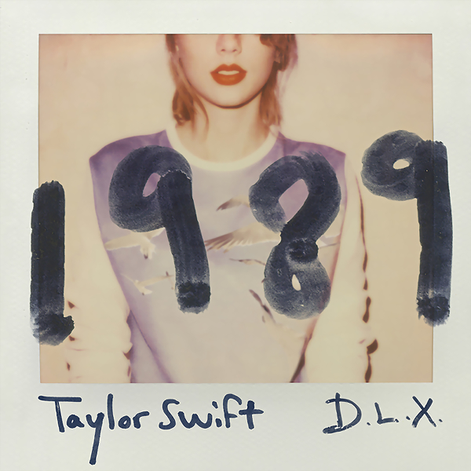
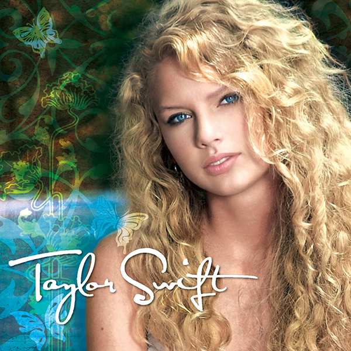
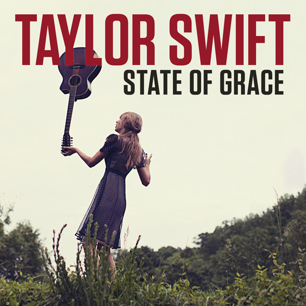
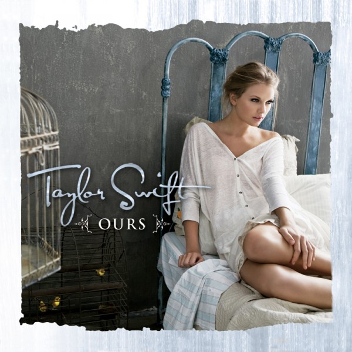
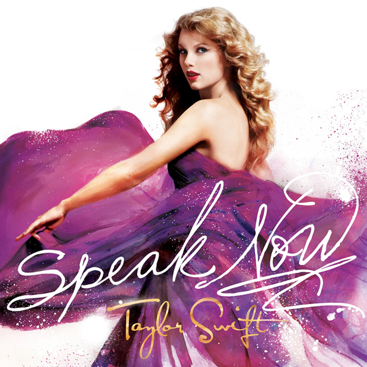
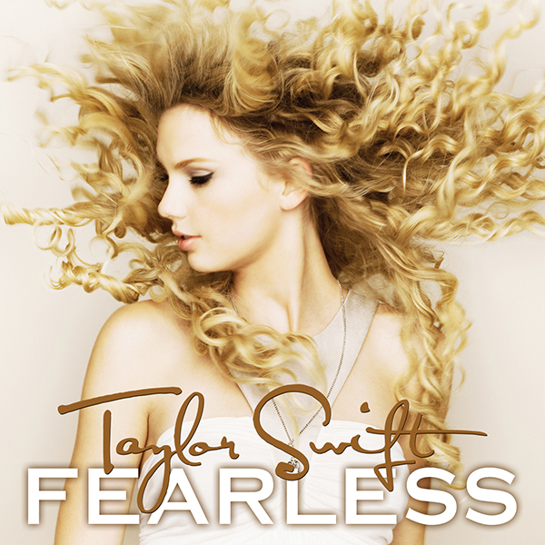
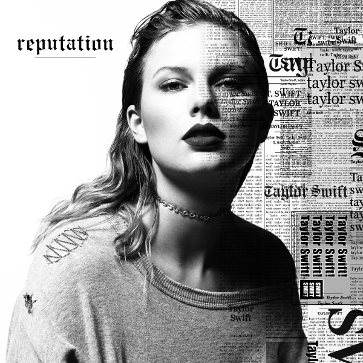
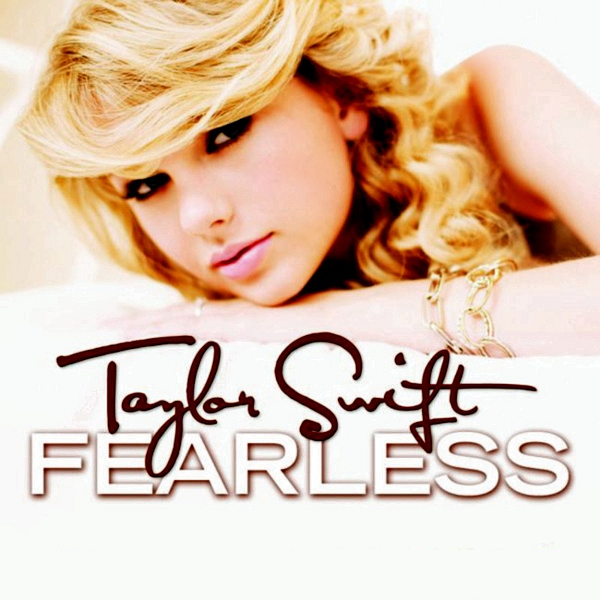
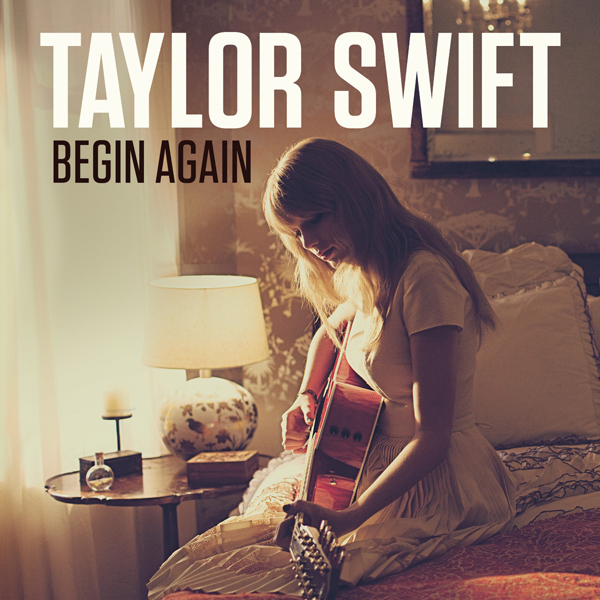
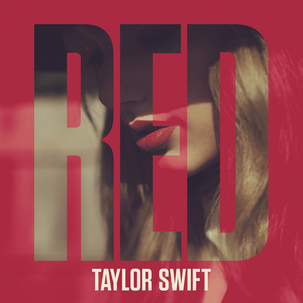

Top 10 Taylor Swift Songs (2020)
-

You Are In Love
The watery and spacey beat sets a mysterious and slightly magical tone to the song. I like the pause between each line in Taylor’s delivery as it compliments the instrumental well. This contrasts nicely with the more upbeat and colourful chorus. I find the lyrics very relatable and sincere. I also love that she talks about the relationship in second person. It's a refreshing way to frame the narrative, making the concept of the song feel more universal.
-

Mary’s Song (Oh Oh Oh)
Off of her debut self-titled album, Taylor describes the relationship of a couple from childhood friends to being old and married. It’s one of her most cheesy and fairytale-like songs — but that’s what makes it so great. Taylor tells a picture perfect story, chronicling the stages of their life through the changing choruses. The song slowly builds in intensity, creating a strong emotional payoff during the second last chorus. These are the types of songs (e.g. Love Story) that are the underpinning of Taylor's views on love and inspiration for songwriting (at least in her earlier years)
-

State of Grace
Featuring pounding, upbeat drums and airy guitars, State of Grace is Taylor’s best intro track ever. It’s about the time when you first fall in love and there are boundless possibilities ahead; good and bad. The vocal layering makes for a grand and symphonic chorus, with the drum beat keeping momentum and building intensity. Taylor pulls off a stadium sound without being gaudy by drawing elements from rock, while still putting her own spin on it. The acoustic version is also amazing, with its slowed tempo and more vulnerable feel.
-

Ours
Ours is a fun and light song with a strong and relatable message. Taylor is vouching for a partner that people don’t approve of. I think most people in a relationship can relate to this in some way. It's a timeless theme with a catchy tune that doesn't get tiring even after 100 listens. It's one of the most stripped down songs on Speak Now in terms of instrumentation, but it prevents the message and mood from being too overbearing.
-

Never Grow Up
I love the wistful tone of the track, where Taylor recalls small but critical moments of her childhood. She comes off very mature, being able to look back on her past youth and see the fleetingness of her life and the memories that have gone by. The hyperbole of wanting to “never” grow up emphasizes Taylor’s yearning for a simpler time, as well her futile grasp onto temporary worldly things. It’s inherently a very sad song, but I think there’s a deep truth to be learned from her message. The lone guitar plucking has a nursery feel to it, adding to the nostalgic tone of the track.
-

The Best Day
Personally, this song is a real tearjerker. Taylor writes from the perspective of her younger self as she reflects on her mother's support and love for her growing up. By having very simple, childlike lyrics, she describes in an endearing way the issues she had when she was younger. She also captures the meaningful impact her mother had on her in dealing with those situations. Her reflection extends to a universally relatable theme of the transcendental nature of parental love. A key aspect of this song is the lo-fi quality of Taylor’s voice along with a subtle reverb, which creates this old, 2000s VCR vibe that fits perfectly with the song's music video.
-

New Year's Day
This song proves that Taylor can still get in her bag and write elegant, simple, and relatable lyrics. Featuring a slow ballad piano as the instrumental, this track has plenty of empty space for Taylor’s lyrics and raw delivery to shine. I love the theme of permanence and how it’s tied in with the idea of New Years Eve being a build-up and closure of a given year. She contrasts that idea with New Year’s Day, referencing a continuation of commitment throughout the new year. Taylor delivers some of her best and haunting lyrics with the bridge and outro.
-

Fearless
This song is the quintessential country ballad of Swift's early career. It is the title track for one her best albums ever, and represents the unabashed belief in love despite having doubts or being hurt. It serves as the anchor to all the other heartbreak songs on the album, saying that regardless of all those pitfalls, love continues to be fearless. It features an iconic guitar riff from the get go of the song and uses her most common song formatting, which includes a guitar solo before the bridge. This is a fan favourite of many, as it should be.
-

Begin Again
This song is about being ready to be in a relationship after a tough, jading break up. Starting the song with back to back verses, Taylor compares her previous relationship to a current, budding one. Combined with the light guitar arpeggio and country string instrumentation, she creates a sense of renewed hope in love. I think Taylor is the strongest when she uses specific occurrences in her life to paint an overarching theme or mood. Without relating to these events, you can still get a good sense of the feeling she's getting across. This is a personal favourite of mine, which is why it’s at number 2.
-

All Too Well
This song features some of Taylor's best songwriting, as she reflects on a past relationship with great vulnerability and depth. I love the progression of the song, from the various choruses to the crescendo of energy building up to the electrifying and cathartic bridge (featuring some of her most gutting lyrics). Her performance of this song at the 2014 Grammys is worth checking out. All Too Well strikes a perfect balance between having a memorable tune without being too overbearing or dramatic (cf. Enchanted). Because of this, it has great replay value and versatility while still being able to hit hard emotionally in the right listening situation.
Honorable Mentions: Sparks Fly, Last Kiss, White Horse, Stay Beautiful, End Game, How You Get The Girl
I also have a Spotify playlist below for convenience: